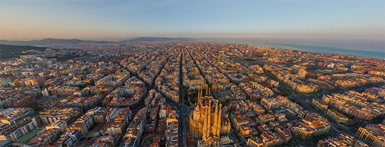
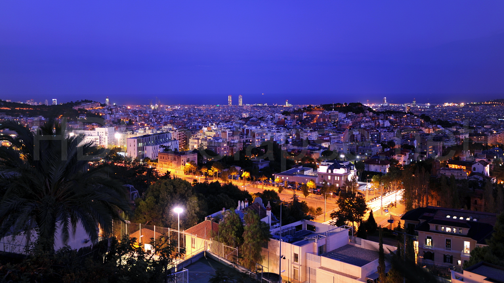

Barcelona feels a bit surreal. Stepping into Gaudí’s Church of the Sacred Family is a bit like falling through the looking glass - a journey that you can continue with a visit to Park Güell. Sip sangria at a sidewalk café in Las Ramblas while watching flamboyant street performers, then create your own moveable feast by floating from tapas bar to tapas bar.
Barcelona is a city known for its amazing nightlife. There is a huge variety in bars, pubs and clubs. From a tiny, cozy traditional Spanish bar to a lot of different amazing clubs. You can go out every night of the week if you´re willing to. It's all about finding your own cup of tea.. or something a little stronger! During the summer, Barcelona´s nightlife becomes even more varied - with open air cinemas, live dj sets on rooftops, and paradise beach bars springing up all over the city.